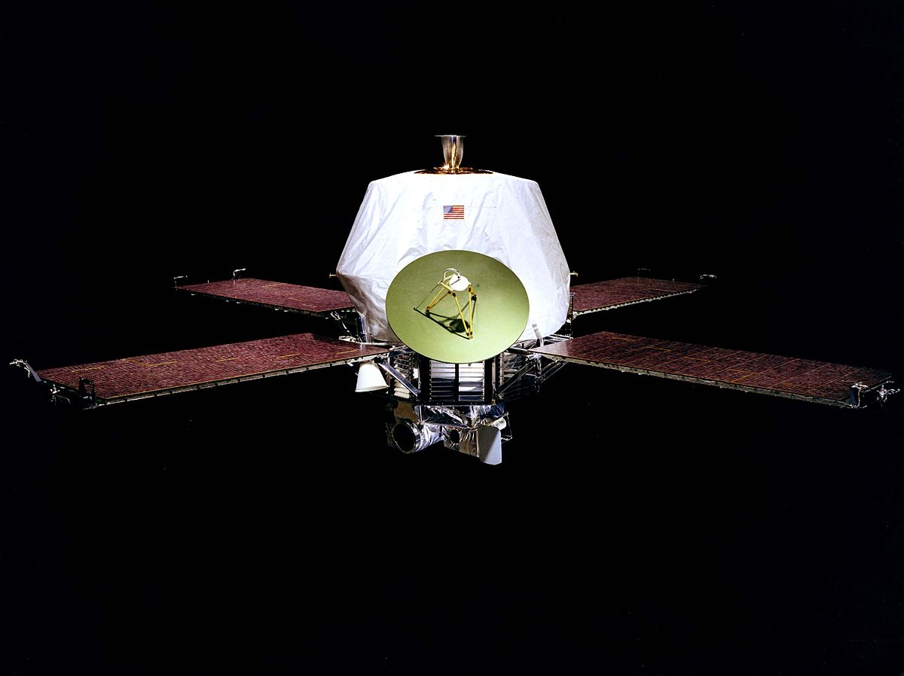
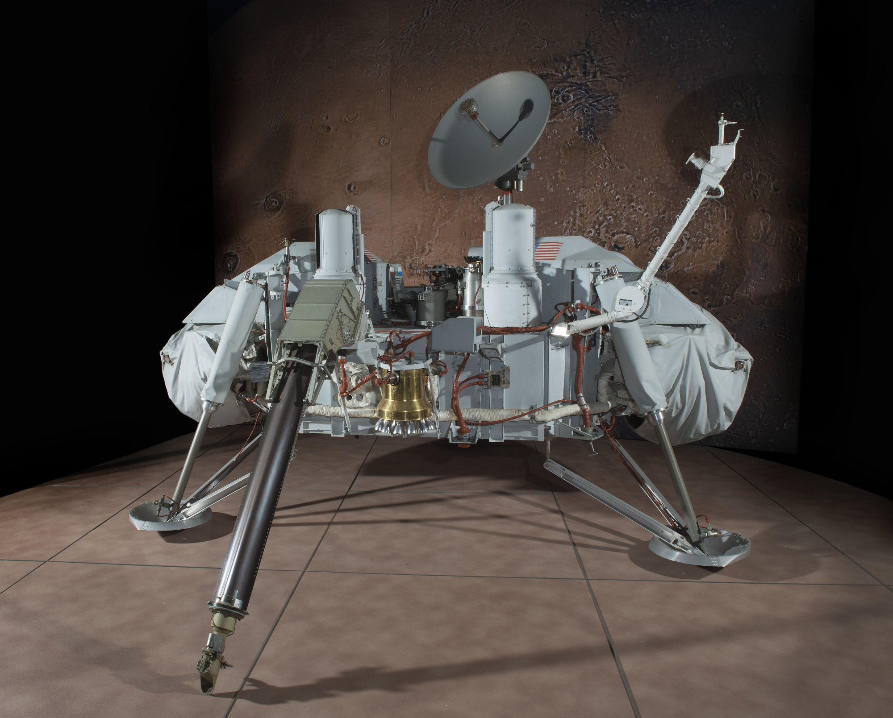
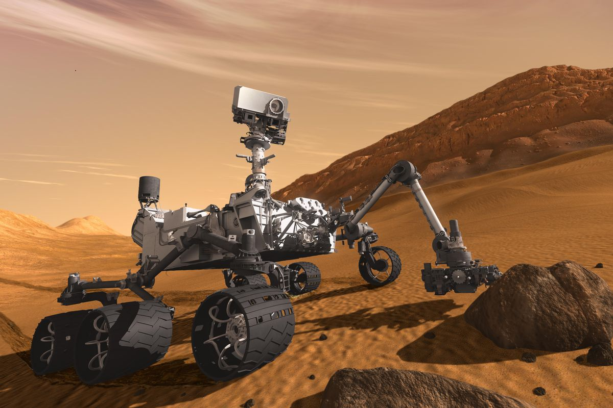
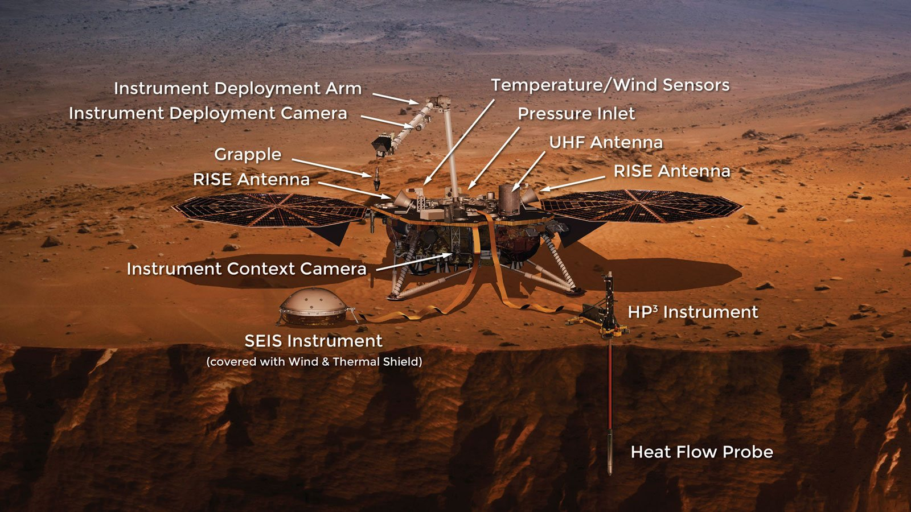

InSight : Interior Exploration using Seismic Investigations, Geodesy and Heat Transport
Adrien RICHARD
Bachelor 2 EPSI Grenoble
09 Aout 2019
Sommaire
- pourquoi il en faut un de plus ?
- les instruments de insight

- Voyage : environ 220 ~ 230 jours
- Vitesse de la lumiere : 8~9 minutes
- Taille : 50% du diametre de la terre
Nasa et mars
Mariner
1964, sonde spacial
Viking
1975, sonde marsienne
Pathfinder
1996, robotPeonix
2003, sonde marsienneOpportinity
2003, robotCuriosity
2011, robot
InSight
Exploration interne par les sondages sismiques, la géodésie et les flux thermiqueinstruments
SEIS

- seismometre
- donne des indications sur l'interieure de la planette
- Extremment sensible
HP3
- Mesure les mouvement de temperature interne a mars
- Premier instrument a creuser aussi profond (5 metres)
- Actuemlement en pause*
*5 Mars 2019
RISE
- Mesure les vibrations des poles grace a la gravité du solei
- Donne des indications sur le centre de mars
| Instrument | Puissance | Données |
|---|---|---|
| SEIS | 8.5w | 38 megabits / jours |
| HP3 | 2w (creuse) | 350 megabits / mission |
| RISE | 78 w (2h par jour) | N/C |

Pret a tous plaquer pour habité sur mars ?
Sources Images
- https://mars.nasa.gov/
- https://nasa.gov/
- https://jpl.nasa.gov/